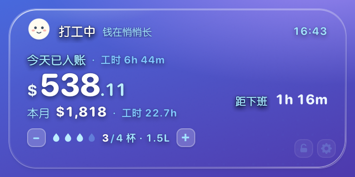
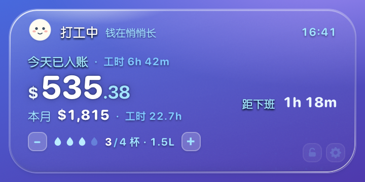
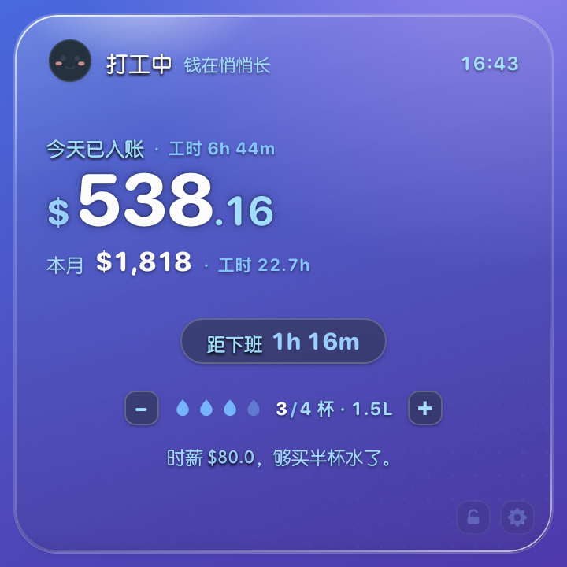

一块常驻桌面的玻璃卡片：把时薪拆成每秒都在跳动的数字，告诉你今天已经赚到多少、本月走到哪一步、还有多久下班。 这套规范定义它的材质、色彩、字阶、尺寸与交互，让它在任何壁纸上都像一块真玻璃，而不是一块贴上去的白纸。
一个不需要打开、不需要点击就会持续汇报的桌面小组件。核心信息只有三件事：今日已入账、本月进度、距下班时间。 其余信息（时薪、每秒收入、奶茶换算）属于情绪价值，只在最大尺寸出现。
金额是视觉锚点，字号最大、字重最重。其余文字必须比它小两级以上，不允许出现第二个人们会先看到的东西。
必须真的模糊桌面之后的像素，并让壁纸的颜色透上来。用半透明白色叠一层做出来的"伪玻璃"，在任何壁纸上都是同一块灰塑料。
用户可以改主题色，但改的只是 OKLCH 的 h 一个变量。明度与饱和度由系统锁定，因此任何颜色的对比度都在安全区内。
小号只留金额，中号加月度进度，大号才出现时薪、每秒收入、奶茶换算。不是等比缩放，是重新排版。
整套规范里技术含量最高、也最容易做砸的部分。先说结论：
在透明 WKWebView 里，CSS 的 backdrop-filter 拿不到窗口背后的桌面像素，
它只能模糊页面内部自己的内容。所以真正的桌面磨砂必须由原生 NSVisualEffectView 提供。
alphaValue 压下来；一压下来，窗口就会把
没被模糊的桌面一起混进来——表现为能看穿卡片看到背后窗口的锐利直角。
解法是把两者串起来：原生压 alpha 负责"透"，CSS 的 backdrop-filter 在合成结果上再糊一次负责"干净"。
这一层现在真的有用，因为它模糊的是原生已经渲染出来的画面，而不是空气。
NSVisualEffectView，material = .popover（夜间 .hudWindow），blendingMode = behindWindow。圆角遮罩只覆盖卡片区域，不含阴影外扩的 8.5px 透明边。通透度的第一道闸门就是这里：alphaValue 压到 通透 .06 / 标准 .12 / 厚重 .34（夜间 .10 / .28 / .55）。Popover 材质本身就偏白，alpha 一高，屏幕上就是一块灰塑料——这是返工最多的一处。
这一层是刻意的空位：不用 backdrop-filter。无边框透明窗口里它采样不到真正的桌面，只会把元素自己涂上一层灰膜——实测就是"卡片发灰像塑料"的直接原因。磨砂只由第 1 层负责，CSS 这侧只做染色。
左上一点暖光（--glass-tint，色相固定 84°，不跟主题漂移）＋ 一层 --glass-1 → --glass-2 的线性渐变。奶油感全部来自这一层，也是三档浓度差异的主要来源。
内联 SVG feTurbulence 噪点，浓度 3.4%（夜间 4.8%）。真实玻璃有微纹理，绝对平滑的渐变正是"塑料感"的来源。这一层要淡到看不出颗粒、但拿掉就觉得假。
1px 渐变描边，用 mask-composite: exclude 抠出环形：左上 95% 白 → 中部 6% → 右下 80% 白。玻璃的"厚度"全靠这一圈。
左上斜向反光 + 顶部聚光，位于内容层之下（z-index:1），不参与文字对比度计算。
原生 hasShadow = NO。投影必须收在 8.5px 留白内：1px / 4·8px / 9·15px 三层紧实阴影，而不是一颗 50px 的大模糊——后者会被窗口边界裁掉，变成一圈灰晕，等于没有悬浮感。
三档是原生 alpha + 薄纱透明度 + 颗粒浓度三者联动，不是只调一个 CSS 变量。只改 CSS 时三档几乎看不出差别，因为通透度主要由原生材质决定。
| 档位 | 原生 alpha（日/夜） | --glass-1 / -2（日） | 适用 |
|---|---|---|---|
| 通透 thin | .06 / .10 | .4% / .2% | 干净壁纸，最像真玻璃 |
| 标准 standard | .12 / .28 | 5.5% / 1.5% | 默认，磨砂与通透兼顾 |
| 厚重 thick | .34 / .55 | 42% / 30% | 花壁纸 / 文字优先 |
原生 alpha 只在几十分之一这个量级上变化，观感差别却很明显 —— 因为底下垫的是真壁纸，不是画上去的背景。



.hudWindow，轨道换成白色 17%（墨色槽在深色卡上会消失）。按"截图 → 定位三个最影响观感的问题 → 逐项改 → 复测"的顺序做，不凭感觉调。
下表记的是当时的实测与改法；之后的返工又把原生 alpha 与窗口留白继续压小（通透 .06 / 留白 8.5px，见 01 节），表里的比例数字只作过程记录，不是当前参数。
| 问题 | 实测证据 | 改法 | 结果 |
|---|---|---|---|
| P1 通透 卡片发灰、像奶白塑料片 |
白底/黑底双测：卡片确实在透（黑底被提到 90/255），但透射被压在 ~34%，且同一张卡内各点透射率 20%~58%——不均匀才是"脏"的主因。薄纱用的是主题色相，冷色主题会把卡片染成灰蓝。 | 薄纱改为固定暖色相 84° 的奶油白；原生 alphaValue 从 1.0 降档（标准 .80）；CSS backdrop-filter 做二次模糊收掉低 alpha 漏出的锐边。 |
透射 ≈37%，色偏消失，卡片在真实桌面上能读出壁纸颜色。 |
| P2 边光与投影 没有玻璃厚度、也不悬浮 |
外层阴影是 0 22px 50px，而窗口只给了 20px 留白——模糊半径远超边界，被裁成一圈灰雾，投影等于不存在。 |
拆成 1px / 4·8px / 9·15px 三层紧实阴影；顶部加 inset 0 1.4px 受光；.rim 渐变边改成"左上 95% → 中部 6% → 右下 80%"的有向受光。 |
卡片下缘出现贴地阴影、上缘出现亮线，悬浮与厚度同时成立。 |
| P3 层次 金额不突出、装饰抢戏 |
环轨道是一条浅紫实心带，视觉重量接近金额；吉祥物用近白填充，在玻璃上几乎消失；倒计时胶囊是"涂色药丸"，比正文还重。 | 轨道改墨色淡槽（56% / 13.5%，夜 17% 白），线宽 8→7；吉祥物改暖奶油实体 + 投影、腮红固定暖粉；胶囊改半透明小玻璃片。 | 视线上"金额 → 环 → 胶囊 → 文案"四级下行，装饰退成背景。 |
--chip / --chip-edge 双主题令牌。money() 为避开与 monthEarned() 的互相递归不返回 month 字段，而文案模板直接用了它。已在取文案处补齐。
整个产品只有一个色相变量 --h。所有颜色（墨色、描边、强调色、薄纱染色）都由它派生，
明度与彩度写死。用户换色时只改 --h，因此不会出现"换成黄色以后字看不见"的情况。
document.documentElement.style.setProperty("--h", 168)。就这一行。
--h: 255 雾蓝为例）| Token | 日间 | 夜间 | 用途 |
|---|---|---|---|
| --ink | #2E3641 · 33% | #EDF2F9 · 96% | 主数字、标题 |
| --ink-2 | #5C646F · 50% | #BBC2CA · 81% | 说明文字、计量单位 |
| --ink-3 | #989FA8 · 70% | #969CA4 · 69% | 仅图形 / 分隔线，不用于文字 |
| --accent | #4087DE · 62% | #76B4FF · 76% | 进度弧、进度条 |
| --accent-ink | #1157A4 · 46% | #99CEFF · 84% | 货币符号、倒计时数字、主按钮底 |
| --accent-soft | 94.5% / 72% | 34% / 62% | 环底、胶囊底、进度条底 |
七个预设覆盖常见情绪，另有取色器接受任意颜色——但只取色相。
因为对比度是算出来的，不是看出来的。--ink-2 在 50% 明度时对玻璃底为 4.88:1，
刚好越过 AA；把它调浅一点，整块卡片的次级文字立刻掉到 4.4 以下。放开这个滑块等于把无障碍交给运气。
| 角色 | 字族 | 用法 |
|---|---|---|
| 数字 / 标题 | ui-rounded → SF Pro Rounded → Yuanti SC | 金额、百分比、倒计时。圆体让"钱"这个数字不带压迫感。 |
| 正文 | Yuanti SC → PingFang SC | 状态、说明、副标题。 |
font-variant-numeric: tabular-nums，跳动时不会左右抖动。¥（0.5em，accent-ink）· 整数（1em，800 字重）· 小数（0.56em，ink-2）。小数点永远比整数浅一级。-0.03em，小字号放 +0.02em。| 层级 | 小号 163 | 中号 343×163 | 大号 343×343 |
|---|---|---|---|
| 主金额 | 28 | 29 | 37 |
| 进度百分比 | —（隐藏环） | 20 | 25 |
| 本月行 | 12 | 13 | 15 |
| 倒计时 | 10.5 | 10.5 | 15 |
| 说明 / 状态 | 11 | 12 | 12 |
| 时钟 | 10.5 | 11.5 | 11.5 |
卡片是重新排版而不是等比缩放：小号隐藏进度环与所有副行，中号横排（环 + 信息列），大号纵排并补上时薪与奶茶换算。 自由拉伸会破坏这套规则，因此只提供三档。
| 尺寸 | 卡片 | 窗口（含阴影边距） | 圆角 | 内容 |
|---|---|---|---|---|
| 小 S | 163 × 163 | 180 × 180 | 24px | 状态 + 金额 + 倒计时 |
| 中 M | 343 × 163 | 360 × 180 | 28px | 金额 + 本月行 + 倒计时（右栏）+ 喝水 |
| 大 L | 343 × 343 | 360 × 360 | 28px | 以上全部 + 时薪换算 + 语录 |
11px 14px 0（大号 14px 16px 0）6px 15px 14px，环与信息列间距 14px--accent-soft，9px 圆头描边--accent 纯色，无渐变，stroke-dashoffset 过渡 820ms小号隐藏；中号 112px；大号 138px。
--accent-soft--accent-soft，填充 --accent| 状态 | 判定 | 状态文案 | 表情 | 倒计时 |
|---|---|---|---|---|
| working | 上班时间内 | 打工中 · 钱在悄悄长 | 睁眼 + 微笑 | 距下班 8h 32m |
| lunch | 午休区间 | 午休中 · 饭也在算钱 | 眯眼笑 | 距下班 5h 10m |
| done | 已过下班时间 | 已下班 · 今天到此为止 | 星星眼 | 距发薪 6 天 |
| before | 未到上班时间 | 还没开工 · 先喝口水 | 半睁 | 距开工 42m |
金额在所有状态下都照常计算（午休不计薪，因此午休期间数字静止）。周末与非工作日按 workDays 折算，不做特殊状态。
| Token | 值 | 用在哪 |
|---|---|---|
| --dur-fast | 160ms | 按钮、色卡、胶囊的即时反馈 |
| --dur-base | 340ms | 金额弹跳 |
| --dur-slow | 820ms | 进度环 / 进度条数值变化 |
| --ease-spring | cubic-bezier(.34,1.56,.64,1) | 入场、弹跳——带过冲的弹性 |
| --ease-out-quart | cubic-bezier(.25,1,.5,1) | 进度过渡——快出慢收 |
popIn（缩放 0.93 → 1 + 上移 8px）只播一次，之后数字变化不再整体动。
下面这张表不是估算，是实测：先把 OKLCH 令牌换算成 sRGB，再对真实截图的玻璃表面取 60×30px 区域平均色
（标准档实测 #E6E8EC），按 WCAG 相对亮度公式计算。
| 前景 | 色值 | 对玻璃底 | 结果 |
|---|---|---|---|
| --ink | #2E3641 | 9.95 : 1 | AA / AAA 通过 |
| --ink-2 | #5C646F | 4.88 : 1 | AA 通过 |
| --accent-ink | #1157A4 | 5.86 : 1 | AA 通过 |
| 白字 on accent-ink | #FFFFFF | 7.18 : 1 | AA 通过 |
| --accent（纯图形） | #4087DE | 3.23 : 1 | ≥3:1 图形要求 |
| --ink-3 | #989FA8 | 2.36 : 1 | 不达标 → 已禁用于文字 |
aria-pressed / aria-checked / role="switch"，键盘可切换尺寸与浓度。单一 JSON 存在 ~/Library/Application Support/NiuMaWidget/state.json，原生在页面加载前注入为 window.__NIUMA_STATE__。
{
"hourly": 80, // 唯一的计价基准，日薪/本月都由它推
"start": "09:00", "end": "18:00",
"lunchEnabled": true, "lunchStart": "12:30", "lunchEnd": "13:30",
"payday": 15, // 发薪日
"offDays": [0, 4, 6], // 每周不上班的日子 0=周日
"milkTea": 18, // 奶茶换算单价
"hue": 255, // ← 唯一的颜色变量
"theme": "light", // light | dark
"glass": "standard", // thin | standard | thick
"water": { "date": "2026-11-4", "cups": 3 },
"waterLog": { "2026-11-4": 3 }, // 每天一条，控制台画近 14 天
"ui": { "cardSize": "medium", "x": 194, "y": 728, "locked": false } // 由原生维护
}
| type | 方向 | payload | 作用 |
|---|---|---|---|
| save | 页面 → 原生 | {data} | 写盘，并把配置回推给小组件立即生效 |
| resize | 控制台 → 原生 | {size:"small|medium|large"} | 切换尺寸并持久化 |
| dragBegin / dragEnd | 页面 → 原生 | — | 开始/结束拖拽，结束时落盘位置 |
| openDashboard | 页面 → 原生 | — | 打开控制台窗口 |
| themeChanged | 控制台 → 原生 | — | 通知小组件重绘 |
| quit | 页面 → 原生 | — | 退出 |
save 时只带配置项，不带 ui。
原生必须在写盘前把旧的 ui 合并回去，否则每次「保存」都会把窗口位置重置回默认角落。
earnings-widget/ ├── native/ │ ├── main.m # NSPanel + NSVisualEffectView + WKWebView + 消息路由 │ ├── Info.plist # LSUIElement=true，无 Dock 图标 │ └── build.sh # clang 直编，无需 Xcode ├── app/ │ ├── widget.html # 小组件本体（三尺寸共用一份） │ └── dashboard.html# 控制台（含三档实时预览） ├── design-system/ # 本文件 └── dist/牛马鼓励器.app
构建：./native/build.sh → 产物 dist/牛马鼓励器.app（约 236 KB，ad-hoc 签名）。